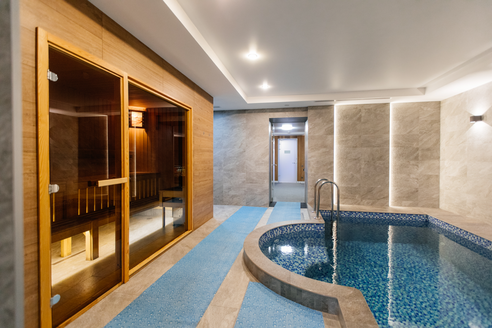
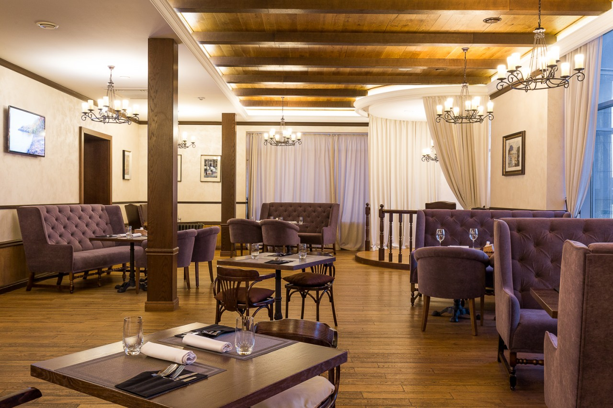
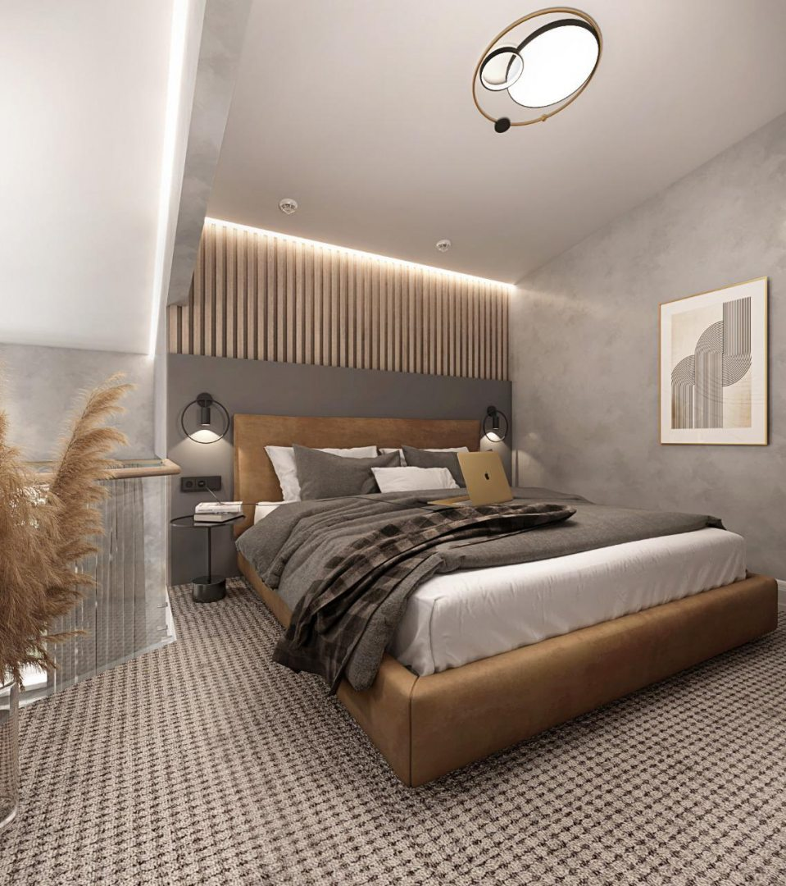

О клубе
«Сибирский сафари клуб» — место с историей. Она началась ещё в 1953 году, когда на месте будущего рекреационного комплекса стоял дом охотника. Деревянные лавки и стол, шкуры, нехитрая посуда — вряд ли вы смогли бы предположить, что пройдёт несколько десятилетий и всё это преобразится в роскошные номера с инфраструктурой для идеального отдыха.

Сегодня «Сибирский сафари клуб» — место силы для тех, кто умеет создавать правильный фон для работы и отдыха. Здесь вас приятно удивят уютные номера — от одноместных до семейных, ресторан, конференц-зал, сауны и бассейн.
Наконец, картину делают полной радушие, с которым у нас встречают каждого гостя, безупречный сервис и индивидуальный подход. «Сибирский сафари клуб» — вдохновляющая история, которую вы с удовольствием впишите в страницы вашей жизни.
Энергетика места оказалась настолько сильна, что вдохновила на создание уникального пространства — точки притяжения для туристов со всего мира. Так появился «Сибирский сафари клуб». Если с сибирским всё очевидно и понятно, то «сафари» стало отсылкой к охотничьим корням. Но сафари это не только и не столько про охоту, сколько о мирных экскурсиях в дикую природу. Все смыслы в названии объединило слово клуб, как символ сообщества первооткрывателей, любителей путешествий и ярких впечатлений.
За стенами комплекса располагается природное пространство — у вас захватит дух от простора и живописного вида на могучий Енисей, который открывается с летней террасы и из комфортабельных беседок.
